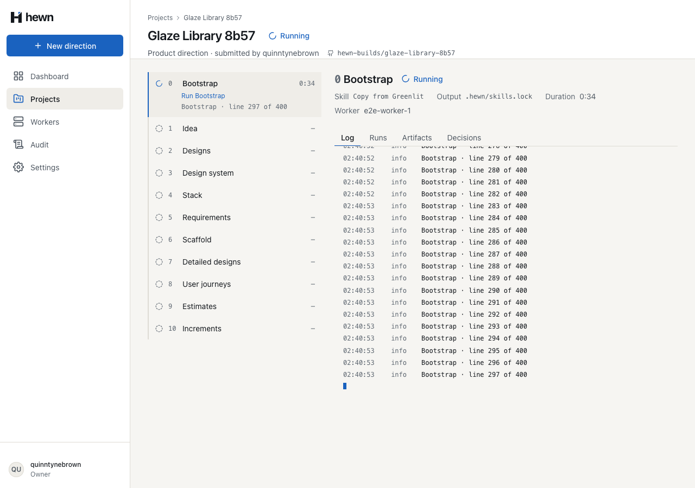
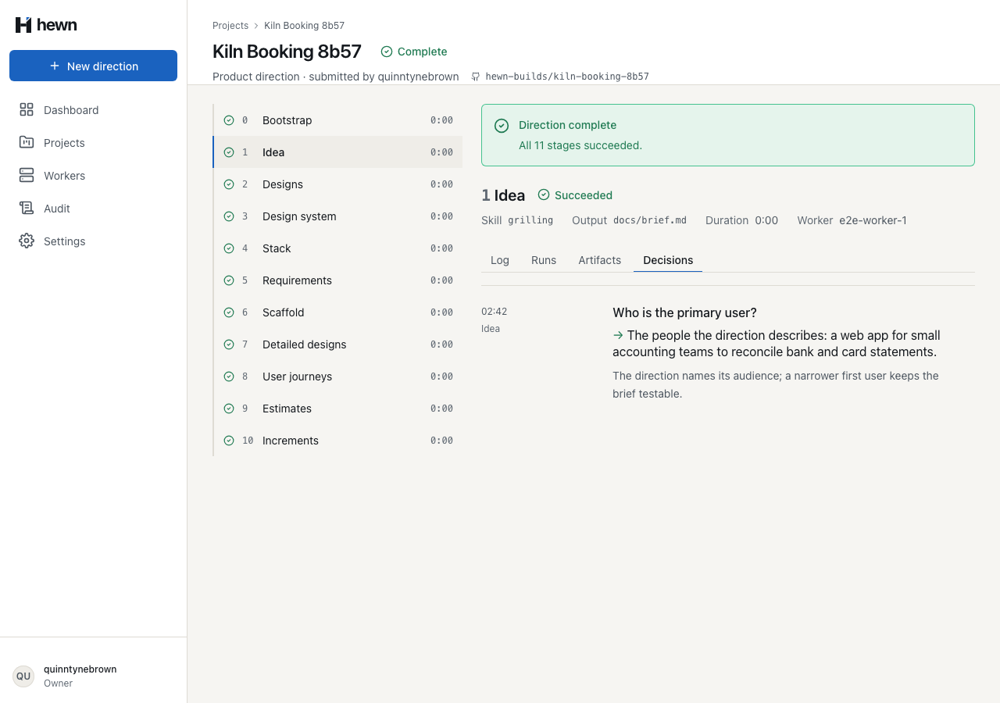
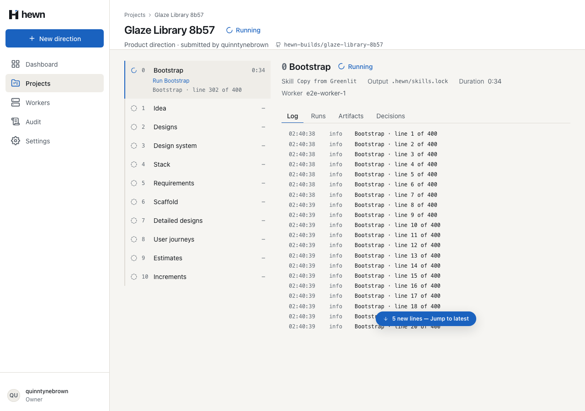
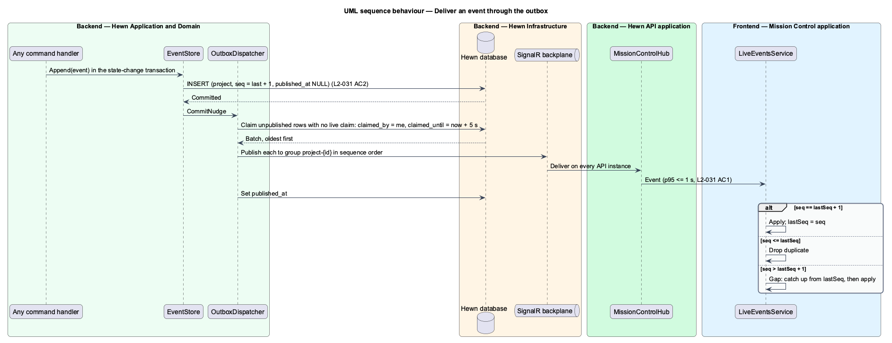
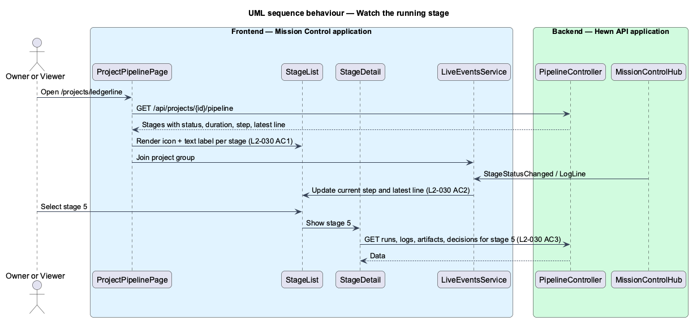
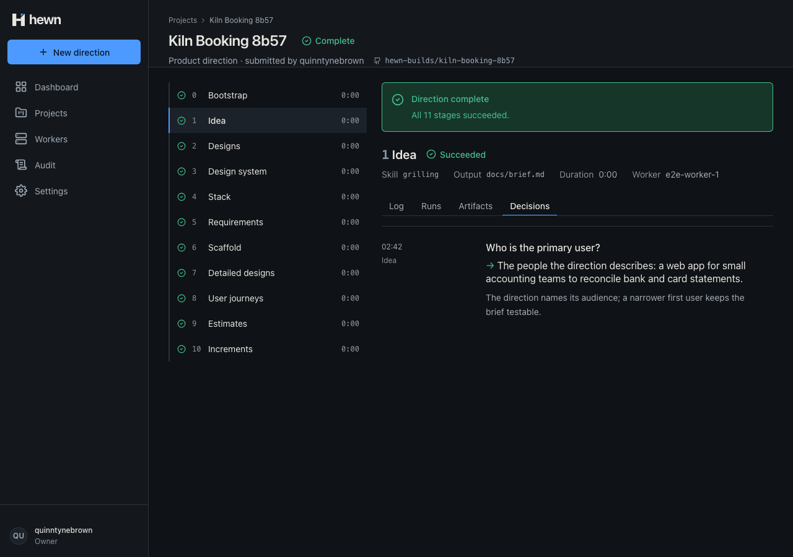
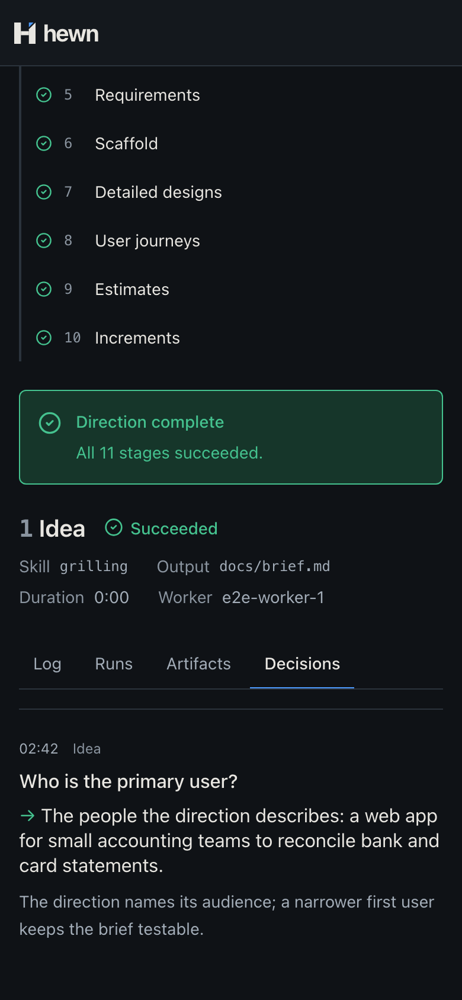
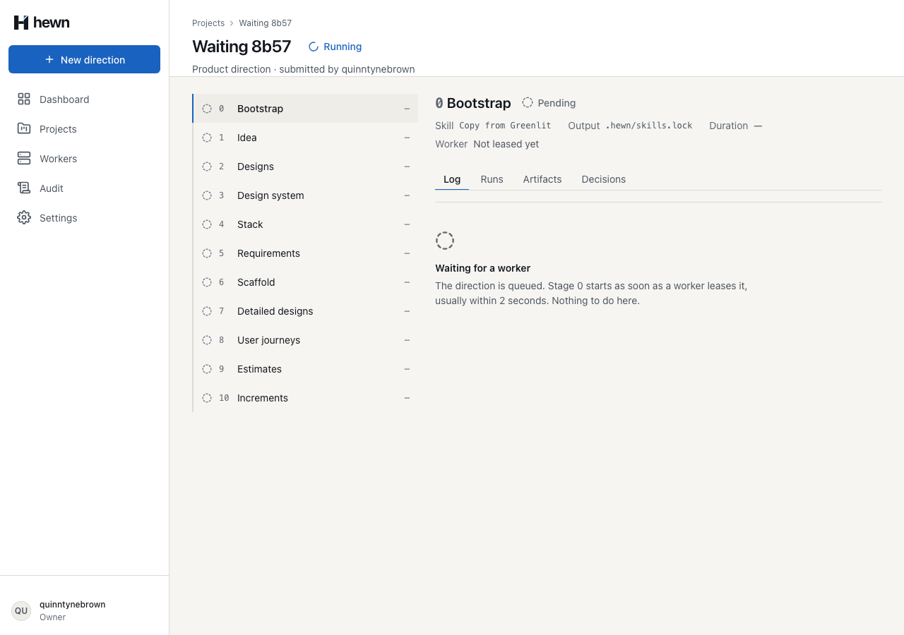

Follow every stage, step and log line live, and see what each stage ran, wrote and decided.




const steps = this.executor.plan(run, context);
for (let index = run.checkpointStep; index < steps.length; index++) {
await this.api.startStep(workerId, run, index + 1, steps[index]!.name);
await steps[index]!.execute(lease.signal);
if (lease.signal.aborted) return;
await logs.flush();
await this.api.checkpoint(workerId, run, index + 1);
flush(): Promise<void> {
this.sending = this.sending.then(async () => {
while (this.pending.length > 0) {
const batch = this.pending.splice(0, this.maxBatch);
try {
await this.send(batch);
} catch (error) {
this.onError(error);
}
}
});
return this.sending;
}
var lines = command.Lines.Select(line => new RunLogLine(run.Id, ++last, line.Level, SecretRedactor.Redact(line.Text), now)).ToList();
db.RunLogLines.AddRange(lines);
await events.AppendAsync(
run.ProjectId,
"LogLines",
new
{
directionId = run.DirectionId,
stage = run.Stage,
runId = run.Id,
lines = lines.Select(l => new { line = l.Sequence, at = l.At, level = l.Level, text = l.Text }),
},
cancellationToken);
await FencedSave.SaveAsync(db, cancellationToken);
await events.PublishAsync(cancellationToken);
case 'StepStarted':
next.directions = updateStage(project, p['directionId'], p['stage'], (s) => ({
...s,
step: p['name'] as string,
runId: p['runId'] as string,
}));
break;
case 'LogLines': {
const lines = (p['lines'] as { text: string }[] | undefined) ?? [];
const last = lines.at(-1);
if (last) {
next.directions = updateStage(project, p['directionId'], p['stage'], (s) => ({
...s,
latestLine: last.text,
runId: p['runId'] as string,
}));
}

export function mergeLines(existing: LogLine[], incoming: readonly LogLine[]): LogLine[] {
const last = existing.at(-1)?.line ?? 0;
if (incoming.every((l) => l.line > last)) {
return incoming.length === 0 ? existing : [...existing, ...incoming];
}
const byLine = new Map(existing.map((l) => [l.line, l]));
const before = byLine.size;
for (const l of incoming) if (!byLine.has(l.line)) byLine.set(l.line, l);
if (byLine.size === before) return existing;
return [...byLine.values()].sort((a, b) => a.line - b.line);
}
export function logWindow(
total: number,
scrollTop: number,
viewportHeight: number,
rowHeight: number,
following = false,
): { start: number; end: number } {
if (total <= MAX_RENDERED_LINES) return { start: 0, end: total };
const inView = Math.ceil(viewportHeight / rowHeight);
const size = Math.min(MAX_RENDERED_LINES, inView + 2 * OVERSCAN);
if (following) return { start: total - size, end: total };
const first = Math.floor(scrollTop / rowHeight) - OVERSCAN;
const start = Math.max(0, Math.min(first, total - size));
return { start, end: start + size };
}
var batches = (await EventsAsync(owner, projectId)).Where(e => e.GetProperty("type").GetString() == "LogLines").ToList();
Assert.Equal(2, batches.Count);
var first = batches[0].GetProperty("payload");
Assert.Equal(directionId, first.GetProperty("directionId").GetGuid());
Assert.Equal(0, first.GetProperty("stage").GetInt32());
Assert.Equal(run!.RunId, first.GetProperty("runId").GetGuid());
var lines = first.GetProperty("lines").EnumerateArray().ToList();
Assert.Equal([1L, 2L], lines.Select(l => l.GetProperty("line").GetInt64()));
Assert.Equal(["info", "warn"], lines.Select(l => l.GetProperty("level").GetString()));
Assert.Equal(["Copied 14 skills", "[redacted]"], lines.Select(l => l.GetProperty("text").GetString()));
14 new, real API
6 new, fake API
Pipeline 11 · behaviour 12 · a11y 7 · visual 4


